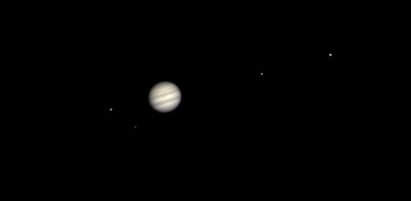

Hi! I'm a senior at UC Berkeley studying Data Science and GIS. Some of my career aspirations include Geospatial Data Analyst, Data Scientist, Analytics, Insights, ML Engineer, and all things that involve data. I'd love for you to check out some of my past projects.
Meanwhile, check out this magnificent view of Jupiter and its moons from my Celestron telescope :0
